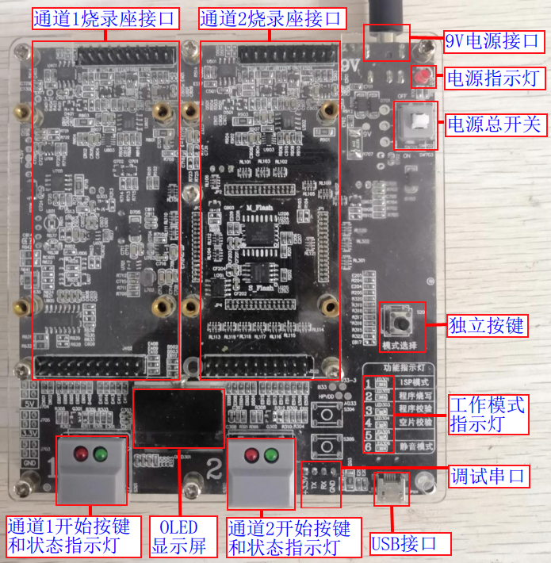
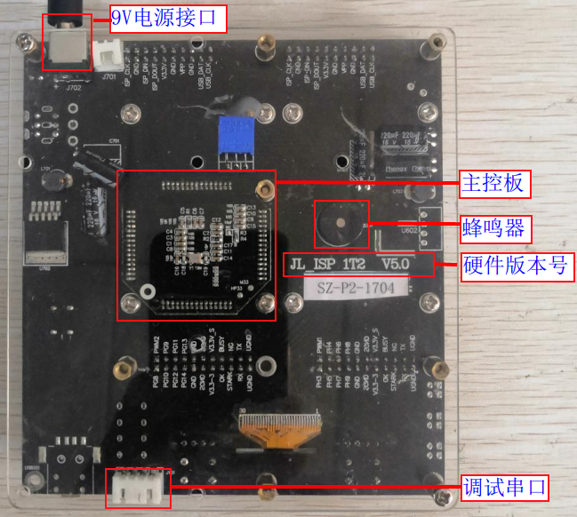
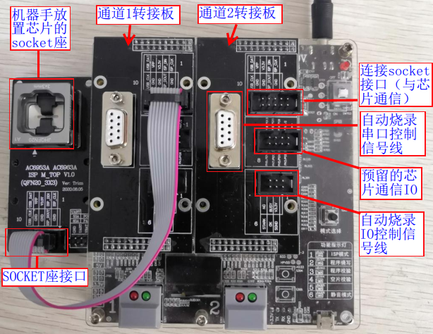

1.1. 烧录器简要介绍
1.1.1. 功能描述
杰理科技一拖二烧录器（通常也叫烧写器，编程器）主要用于离线烧录（烧录过程不需连接PC计算机）杰理各系列芯片的程序，适用于先对芯片裸片烧录程序后再对芯片贴片上样场景。
可同时实现对2个目标芯片烧录,支持开发过程对目标芯片手动烧录程序，量产配合自动烧录机台对目标芯片自动烧录程序。
手动烧录裸片需上层板支持，自动烧录裸片需转接板支持。一拖二烧录器主要有以下功能：
程序烧录
程序校验
芯片查空
授权烧录次数限制
蓝牙地址自增
认证码等第三方数据烧录
自定义资源文件烧录
芯片性能测试
特殊功能定制
Important
烧录器功能和各个功能相关配置的详细使用说明请参考对应章节内容！！！
1.1.2. 烧录器清单
编号 |
模块类型 |
包含部分 |
说明 |
|---|---|---|---|
1 |
烧录器主机 |
主控板 |
用于控制烧录器工作 |
9V电源供电口 |
主供电端口 |
||
电源指示灯 |
上电后亮灯 |
||
电源自锁开关 |
总电源开启与关闭 |
||
拨码开关 |
用于工作模式设置 |
||
独立按键（模式选择） |
强制更新烧录器程序 |
||
USB接口 |
用于升级烧录器固件 |
||
调试串口 |
烧录器出问题时方便工程师调试 |
||
通道1烧录座接口 |
接上层板或转接板 |
||
通道2烧录座接口 |
接上层板或转接板 |
||
通道1开始按键 |
按开始按键进行手动烧录 |
||
通道2开始按键 |
按开始按键进行手动烧录 |
||
通道1开始按键指示灯 |
用于指示烧录状态 |
||
通道2开始按键指示灯 |
用于指示烧录状态 |
||
工作模式状态指示灯 |
指示烧录，校验、查空，静音模式 |
||
OLED显示屏 |
显示烧录状态信息 |
||
蜂鸣器 |
烧录状态声音提示 |
||
2 |
上层板 |
指手动烧录时放芯片对应的socket板，用于手动 |
|
3 |
转接板 |
用于接口标准化，自动烧录接转接socket板 |
|
4 |
转接socket板 |
指自动烧录时放芯片的socket板，用于机台 |
|
5 |
USB数据线 |
用于烧录器和PC电脑连接， |
|
6 |
电源适配器 |
请使用9.0V、2.0A以上规格电源 |
1.1.3. 烧录器主机介绍
1.1.3.1. 不同版本烧录器差异
本文档以常用的V3.1硬件版本烧录器和V5.0硬件版本烧录器进行介绍，这两个不同的硬件版本的烧录器功能一致，主要差异在于工作模式设置不同，差异如下：
硬件版本 |
差异说明 |
|---|---|
V3.1 |
烧录、校验、查空工作模式由拨码开关设置 |
V5.0 |
烧录、校验、查空工作模式由独立按键设置,无拨码开关 |
1.1.3.2. V3.1硬件版本烧录器
V3.1硬件版本烧录器如V3.0主机正面所示。

V3.0主机正面
1.1.3.3. V5.0硬件版本烧录器
V5.0硬件版本烧录器如V5.0主机正面所示。

V5.0主机正面
1.1.3.4. 烧录器背面实物
烧录器主机背面实物如主机背面所示。

主机背面
1.1.4. 主控板介绍
1.1.4.1. 不同版本主控板差异
目前主控板有两个硬件版本提供使用，分别为V3.0版本主控板和V5.0版本主控板，两者差异如下：
硬件版本 |
差异说明 |
|---|---|
V3.0 |
不带授权烧录次数限制功能 |
V5.0 |
带授权烧录次数限制功能 |
1.1.4.2. 主控板实物
不同版本主控板实物如不同版本主控板所示

不同版本主控板
1.1.5. 上层板介绍与安装
在手动烧录时需要用到芯片封装和型号对应的上层板，用于放置待烧录的芯片，与烧录器通信，实现芯片烧录的功能。
也可以直接接线烧录未焊接电池的半成品PCBA，样机，开发板，socket座，芯片最小系统，烧录接线参考《 芯片烧录接线和供电说明》。
上层板安装在烧录器上的实物如上层板安装所示。上层板正朝向朝烧录器正向插入
通道1烧录座接口或通道2烧录座接口即可。

上层板安装
安装注意事项
烧录器与上层板的接口（上下两排）：上排是 20P，下排是 22P，
而烧录器顶板：上排是 20P, 下排也是 20P，
在安装上层板的时候，下排要靠右，部分上层板即下排针最左会留空一排针。
1.1.6. 转接板介绍与安装
在机台自动烧录时需要用到转接板连接自动烧录控制信号线，同时用转接板与机烧芯片封装和型号对应的专用socket座进行连接。
转接板与socket座连接并安装在烧录器上的实物如转接板安装所示
转接板安装：
正朝向朝烧录器正向插入通道1烧录座接口或通道2烧录座接口即可；
机械手放置芯片的socket座安装：
先使用螺丝固定socket座在自动化机台上；
使用对应排线进行
socket座的接口与转接板上的连接socket座的接口连接；使用对应排线进行
机台自动烧录IO控制信号线与转接板上的自动烧录IO控制信号线连接；

转接板安装
Important
“自动烧录IO控制信号线”接口有
Start信号线，Busy忙信号线，Ok信号线，V3.3V，GND信号引脚自动烧录控制原理可参考《 机台自动烧录操作流程》
安装注意事项
同上层板安装一致
1.1.7. 烧录器使用流程说明
烧录器使用流程
烧录器使用流程大致如烧录器使用流程图所示。

烧录器使用流程图
使用流程说明
以下通过表格的方式，对使用流程进行介绍说明。
使用流程
说明
烧录器上电开机
烧录器出货前已经烧录有烧录器固件程序，
拿到烧录器后即可上电开机确认或更新烧录器固件
烧录器固件指控制整个烧录器工作的主控芯片固件程序，
烧录目标芯片程序前务必确认当前烧录器固件版本是否是最新，
不是最新请通过远程升级方式更新最新版本烧录器固件程序
（特殊情况除外），否则可能出现一些烧录问题。确认或更新目标芯片程序
目标芯片程序指sdk工程编译生成的fw文件、ufw文件，或key文件；
需把文件更新到烧录器存起来，
烧录时才能把对应数据烧录到目标芯片，或实现校验和查空功能；
更新目标芯片程序时还需对烧录配置项进行配置，
实现资源烧录、芯片性能测试等功能确认或设置烧录器工作模式
工作模式指烧录、校验、查空等工作模式；
务必确认好烧录器当前的工作模式，以防出现一些烧录问题手动或自动烧录芯片程序
手动烧录指通过上层板进行手动操作烧录芯片；
自动烧录指通过转接板并使用自动烧录机台控制实现自动烧录
1.1.8. 名词解释
烧录器：又称烧写器，编程器。用于向可编程集成电路（如单片机，存储器flash,otp等）写入数据的工具。杰理相关文档，工具界面，显示屏等看到
烧录，烧写都是同一个意思。
上层板：指手动烧录时放芯片对应的socket板，即用于手动烧录的与烧录器配套使用的芯片最小系统板。其把烧录器输出的vpp 6.5v电压转为芯片烧录需要的4.2v等电压,并引出烧录线和烧录器连接！可以参考《芯片烧录接线和供电说明》章节直接烧录开发板或已经贴片的样机。
转接板：主要用于把烧录器的排针信号线转为通用接口，用于自动烧录接转接socket板和自动烧录信号线。
转接socket板：指自动烧录时方便机械手放芯片的socket板，即用于机台烧录的与烧录器配套使用的芯片最小系统板;同上层板类似，也可以用于手动烧录。
裸片：一般指未贴片上样机的芯片。
空片：指出厂后没有经过烧录的芯片，通常指芯片的flash，硬件存储介质等为空数据状态！
烧录器固件：用于控制整个烧录器工作的烧录器固件程序。
目标芯片程序：指sdk（软件开发工具包）编译生产的fw文件，ufw文件等可执行文件，可以通过烧录器烧录到芯片运行，控制整个产品工作。
离线烧录：不需要使用PC电脑进行烧录。一拖二烧录器是先通过PC电脑把目标芯片程序部署到烧录器存储器存储起来，再实现离线烧录芯片。
fw文件：指目标芯片可执行程序，常用于烧录空片。
ufw文件：指目标芯片可执行程序，主要用于对可以运行的样机芯片执行程序的二次更新升级，如使用测试盒，SD卡，U盘升级等。也支持通过烧录器进行升级。
key文件: 为一个秘钥文件，下载目录download.bat配置key文件后实现对生成的fw/ufw文件数据的加密，烧录fw/ufw文件数据时，key文件数据会被烧录到芯片硬件存储介质，芯片运行时通过硬件解密程序数据实现程序运行！客户烧录器key文件具有唯一性，每个客户都各自有属于自己的key文件，fw文件的key文件与烧录器的key文件一致才能烧录！只有量产烧录器支持烧录key文件！支持单独烧录key文件后再通过其他烧录工具烧带key文件的fw文件！